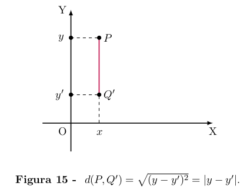

A Geometria Analı́tica baseia-se na ideia de representar os pontos da reta
por números reais, os pontos do plano por pares ordenados de números
reais e os pontos do espaço por ternos ordenados de números reais.
Dentro dessa concepção, as linhas e as superfı́cies, no plano e no espaço,
são descritas por meio de equações. Isto permite tratar algebricamente
muitas questões geométricas e, reciprocamente, interpretar de forma
geométrica certas situações algébricas.
A interconexão entre Geometria e Álgebra resultante desse ponto de
vista foi responsável por extraordinários progressos na Matemáttica e
suas aplicações.
No que se segue, apresentaremos as noções básicas de Geometria
Analı́tica, enfatizando seus aspectos mais relevantes para um estudo in-
trodutório.
Admitiremos conhecidos os fatos mais elementares da Geometria como,
por exemplo, que por dois pontos dados passa uma, e somente uma, reta;
que por um ponto dado fora de uma reta passam uma única paralela e
uma única perpendicular a essa reta, etc.
Coordenadas na Reta
Admitimos fixada, de uma vez por todas, uma unidade de comprimento.
Dados os pontos A, B quaisquer, o comprimento do segmento de reta
AB chama-se a distância entre os pontos A e B. Escrevemos d(A, B) ou
AB para indicar essa distância, que é um número real.
Convencionaremos pôr d(A, A) = 0. Se A 6= B, tem-se d(A, B) > 0.
Além disso, vale
d(A, C) + d(C, B) = d(A, B)
se, e somente se, o ponto C pertence ao segmento de reta AB. É claro
também que d(A, B) = d(B, A).
A noção de distância permite introduzir coordenadas sobre uma reta,
ou seja, representar os pontos da reta por meio de números reais. Para
fazer isto, será necessário orientar a reta e escolher um dos seus pontos
como origem.
Seguem-se os detalhes desse procedimento.
Definição (Reta orientada).
Uma reta diz-se orientada quando sobre ela se escolheu um sentido de
percurso, chamado positivo; o sentido inverso chama-se negativo.

Numa reta orientada, diz-se que o ponto B está à direita do ponto A
(portanto A está à esquerda de B) quando o sentido de percurso de A
para B é positivo.

Definição (Eixo).
Um eixo é uma reta orientada na qual se fixou um ponto O, chamado a
origem.

Todo eixo E pode ser posto, de modo natural, em correspondência
biunı́voca com o conjunto R dos números reais, do seguinte modo:
- A origem O do eixo faz-se corresponder o número zero.
- A cada ponto X de E situado à direita de O corresponde o número real
positivo x = d(O, X) = distância de X à origem = comprimento do
segmento de reta OX.
- Aos pontos situados à esquerda de O correspondem números reais ne-
gativos, cujos valores absolutos medem as distâncias desses pontos à
origem.
Portanto, a cada ponto X no eixo E corresponde o número real
x = d(O, X) se X está à direita de O e x = −d(O, X) se X está à
esquerda de O.
O número real x, que corresponde ao ponto X do eixo E da maneira
acima indicada, chama-se a coordenada desse ponto. Reciprocamente,
para cada número real x existe um (único) ponto X em E cuja coorde-
nada é x.
Se x e y são respectivamente as coordenadas dos pontos X e Y do eixo
E então tem-se x < y se, e somente se, X está à esquerda de Y . Além
disso, tem-se
d(X, Y ) = |x − y|.
A importante igualdade d(X, Y ) = |x − y| se demonstra usando (além
da relação evidente d(A, B) = d(B, A)) o fato de que se A, B, C são
pontos de uma reta tais que C está situado entre A e B então
d(A, B) = d(A, C) + d(C, B).
Com efeito, dados os pontos X e Y sobre o eixo E, com coordenadas
respectivas x e y, sem perda de generalidade podemos supor que X
esteja à esquerda de Y . Então há 3 casos possı́veis:
- O está entre X e Y (logo x < 0 < y);
- Y está entre X e O (logo x < y < 0);
- X está entre O e Y (logo 0 < x < y).
No primeiro caso, tem-se
d(X, Y ) = d(X, O) + d(O, Y ) = −x + y = |x − y|.
No segundo caso,
d(O, X) = d(O, Y ) + d(Y, X),
ou seja, −x = −y + d(X, Y ), donde
d(X, Y ) = y − x = |x − y|.
Finalmente, no terceiro caso,
d(O, Y ) = d(O, X) + d(X, Y ),
isto é, y = x + d(X, Y ) , donde
d(X, Y ) = y − x = |x − y|.
Se A e B são pontos do eixo E, com A à esquerda de B, e suas coordena-
das respectivas são a e b, então a coordenada x de um ponto arbitrário
X do segmento de reta AB é um número x tal que a ≤ x ≤ b. Noutras
palavras, ao segmento de reta AB ⊂ E corresponde o intervalo [a, b] ⊂ R.
Parametrização de um segmento.
Para cada ponto X do segmento de reta AB, tem-se evidentemente
d(A, X) ≤ d(A, B), logo a razão t =
é um número real compreendido entre 0 e 1. Quando X = A tem-se t = 0 e, quando X = B, vale t = 1.
Se, para cada t ∈ [0, 1], chamarmos de Xt o ponto do segmento de reta AB tal que
= t, veremos que a coordenada
do ponto
está relacionada com as coordenadas a e b dos pontos A e B pela igualdade
= t, ou seja
= (1 − t)a + tb = a + t(b − a).

Exemplo 1.
Quando t =
o ponto
=
chama-se ponto médio do segmento AB; sua coordenada
=
a +
b =
é a média aritmética entre as coordenadas a e b dos pontos A e B.
Exemplo 2
Tomando t =
,
obtemos o ponto X =
cuja coordenada
X = (1 -
) a +
b =
a +
b.
é o número que separa o intervalo [a, b] em dois subintervalos [a, x] e
[x, b] com
=
Observação 1
Quando estudamos os números reais, fazemos a cada x ∈ R corresponder
um ponto X sobre o eixo E. Em Geometria Analı́tica, o processo é
inverso: procura-se associar a cada ponto do eixo E um número, chamado
sua coordenada. Para isso, admitimos que exista a noção de distância
entre dois pontos desse eixo, isto é, que tenha sido fixada uma unidade
de comprimento.
Observação 2
Quando A é o ponto médio do segmento de reta XX', diz-se que X' é o
simétrico de X relativamente ao ponto A. Se A, X e X' estão localizados
sobre um eixo E e suas coordenadas são respectivamente a, x e x' tem-se
então a =
, logo x' = 2a − x. Note que desta igualdade resulta x = 2a − x'.
Isto corresponde ao fato de que X é por sua vez o simétrico
de X' relativamente ao ponto A.
Exemplo 3
Se no eixo E os pontos A e B têm respectivamente coordenadas 3 e 17
então a coordenada do ponto médio do segmento AB é 10 e a coordenada
do ponto B', simétrico de B em relação A, é -11.
Coordenadas no Plano
Indica-se como R² o conjunto formado pelos pares ordenados (x, y), onde
x e y são números reais.
Dados (x, y) e (x', y') em R² , tem-se (x, y) = (x', y') se, e somente se,
x = x' e y = y'. O número x chama-se a primeira coordenada e o número
y a segunda coordenada do par (x, y). Observe, por exemplo, que os pares
ordenados (2, 3) e (3, 2) são diferentes pois a primeira coordenada de
(2, 3) é 2 enquanto que a primeira coordenada de (3, 2) é 3.
Por outro lado, os conjuntos {2, 3} e {3, 2} são iguais pois um objeto
pertence a um deles se, e somente se, pertence ao outro. Portanto, um
par ordenado não é a mesma coisa que um conjunto com dois elementos.
No par ordenado (x, y) pode-se ter x = y mas se {x, y} é um conjunto
com dois elementos tem-se necessariamente x ≠ y.
Mostraremos agora como usar R 2 para obter um modelo aritmérico de
um plano
Definição (Sistema de coordenadas)
Um sistema de coordenadas (cartesianas) no plano II consiste num par
de eixos perpendiculares OX e OY contidos nesse plano, com a mesma
origem O. OX chama-se o eixo das abcissas e OY é o eixo das ordenadas.
O sistema é indicado com a notação OXY.
A escolha de um sistema de coordenadas no plano II permite estabelecer
uma correspondência biunı́voca II → R² . A cada ponto P do plano II
fazemos corresponder um par ordenado (x, y) ∈ R² . Os números x e y
são as coordenadas do ponto P relativamente ao sistema OXY : x é a
abcissa e y é a ordenada de P.
As coordenadas x, y do ponto P são definidas do seguinte modo:
Se P estiver sobre o eixo OX, o par ordenado que lhe corresponde é
(x, 0), onde x é a coordenada de P no eixo OX. Se P estiver sobre o
eixo OY, a ele corresponde o par (0, y), onde y é a coordenada de P nesse
eixo. Se P não está em qualquer dos eixos, traçamos por P uma paralela
ao eixo OY, a qual corta OX no ponto de coordenada x e uma paralela
ao eixo OX, a qual corta OY no ponto de coordenada y. Então x será
a abcissa e y a ordenada do ponto P. Noutras palavras, (x, y) ∈ R² é o
par ordenado de números reais que corresponde ao ponto P.
O ponto O, origem do sistema de coordenadas, tem abcissa e ordenada
ambas iguais a zero. Assim, a ele corresponde o par (0, 0) ∈ R².
O emprego de coordenadas no plano serve a dois propósitos que se com-
plementam. O primeiro é o de atribuir um significado geométrico (e com
isto dar um maior conteúdo intuitivo) a fatos de natureza numérica,
como o comportamento de uma função real de uma variável real, que
ganha muito em clareza quando se olha para seu gráfico. O segundo
propósito do uso das coordenadas vai no sentido oposto: recorre-se a
elas a fim de resolver problemas da Geometria. Este é o objetivo da
Geometria Analı́tica. No primeiro caso, a ênfase recai sobre a corres
pondência R² → II e no segundo sobre sua inversa II → R² . Na prática,
esses dois pontos de vista se entrelaçam: para estabelecer os fatos iniciais
da Geometria Analı́tica usam-se os resultados básicos da Geometria
Euclidiana.
Em princı́pio o plano II, cujos elementos são pontos, não é a mesma coisa
que o conjunto R² , cujos elementos são pares de números reais. Entre-
tanto, quando fixarmos um sistema de coordenadas em II, usaremos a
correspondência II → R² para identificar cada ponto P do plano com o
par ordenado (x, y) que lhe corresponde. Assim, escrevemos P = (x, y)
querendo dizer com isto que P é o ponto do plano cuja abcissa é x e cuja
ordenada é y.
Os eixos ortogonais OX e OY decompõem o plano II em quatro regiões,
cada uma das quais se chama um quadrante. O primeiro quadrante é
o conjunto dos pontos P = (x, y) tais que x ≥ 0 e y ≥ 0. O segundo
quadrante é formado pelos pontos P = (x, y) com x ≤ 0 e y ≥ 0. O
terceiro, pelos pontos P = (x, y) com x ≤ 0 e y ≤ 0. Finalmente, os
pontos P = (x, y) do quarto quadrante são aqueles em que x ≥ 0 e y ≤ 0.
Fixando o sistema de coordenadas OXY no plano Π, o primeiro e o
terceiro quadrantes formam dois ângulos retos, opostos pelo vértice. Os
pontos P = (x, y) da bissetriz comum desses dois ângulos são (como
todos os pontos de uma bissetriz) equidistantes dos lados, logo têm ab-
cissa e ordenada iguais (ambas positivas no primeiro quadrante e ambas
negativas no terceiro). Esta reta ∆ chama-se a diagonal do plano II
(relativamente ao sistema OXY). Tem-se portanto P = (x, y) ∈ ∆ se, e
somente se, x = y.
Analogamente, um ponto Q = (x, y) pertence à bissetriz ∆' comum ao
segundo e quarto quadrantes se, e somente se, x = −y.
Ponto Médio de um Segmento
Dados os pontos A = (a, b) e A' = (a', b'), quais são as coordenadas do
ponto médio M = (x, y) do segmento de reta AA'? A resposta é
x =
e y =
e a ela chegaremos usando um pouco de Geometria Plana.
Suponhamos inicialmente que a ≠ a' e b ≠ b' , isto é, o segmento AA' não
é vertical (paralelo ao eixo OY) nem horizontal (paralelo ao eixo OX).
Então, considerando os pontos P = (x, b) e Q = (a', y), vemos que APM e MQA'
são triângulos retângulos cujas hipotenusas AM e MA' têm o mesmo comprimento,
já que M é o ponto médio de AA'. Além disso, os ângulos agudos PÂM e QMA' são
congruentes porque os lados AP e MQ são paralelos. Portanto APM e MQA' são triângulos congruentes.
Daı́ resulta que os segmentos AP e M Q têm o mesmo comprimento. Logo, pondo
= (a, 0),
= (x, 0) e
= (a', 0), concluı́mos que
é o ponto médio do segmento
no eixo OX. Segue-se então que x =
. De modo análogo se vê que y =
.
Quando o segmento AA' é horizontal (isto é, b = b') ou vertical (a = a'),
o argumento acima se simplifica, reduzindo-se imediatamente ao caso do
ponto médio de um segmento localizado sobre um eixo.
Exemplo 4
Encontre as coordenadas do ponto médio do segmento AB, onde
A = (1, 2) e B = (5, 4).
Solução.
Seja M = (x, y) as coordenadas do ponto médio do segmento AB. Então
x =
= 3 e y =
= 3
Portanto
M(3, 3).
Se os pontos P = (x, y) e Q = (x', y) têm a mesma ordenada y então a
distância d(P, Q) entre eles é igual à distância
|x − x'| =
entre suas projeções sobre o eixo OX.
Analogamente, se P = (x, y) e Q' = (x, y') têm a mesma abcissa x
então
d(P, Q) = |y − y'| =
que é igual à distância entre as projeções de P e Q sobre o eixo OY.

Se, entretanto, P = (x, y) e Q = (u, v) têm abcissas e ordenadas dife-
rentes então, considerando o ponto S = (u, y), vemos que P SQ é um
triângulo retângulo cuja hipotenusa é P Q. Como P e S têm a mesma
ordenada, enquanto S e Q têm a mesma abcissa, segue-se que
d(P, S) = |x − u| e d(S, Q) = |y − v|.
Pelo Teorema de Pitágoras, podemos escrever
d(P, Q)² = d(P, S)² + d(S, Q)².
Portanto,
d(P, Q)² = (x − u)² + (y − v)²,
Logo,
d(P, Q) =
Em particular, a distância do ponto P = (x, y) à origem O = (0, 0) é
d(O, P) =